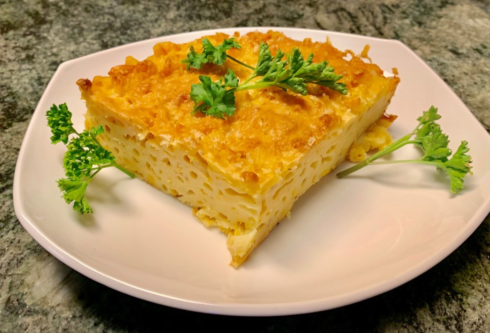

Maccarone pie

Description
the secret to the recipe is the New Zealand cheddar
cheese which is made from grass fed pasteurized cow
milk and tastes both buttery and smooth. It may seem
curious that mustard and ketchup are in this recipe.
But some of the key ingredients spice wise include
turmeric and vinegar, which are in mustard. Also,
sugar and tomato so ketchup does the trick. There is
no doubt that Bajan macaroni pie is a delicious staple
in Barbados!
Ingredients:
- 12 oz macaroni
- 1 tbsp butter
- 1 tbsp olive oil
- 1 egg
- 1 cup milk
- 1 medium white onion, diced finely
- 2 tsp yellow mustard
- 2 tbsp ketchup
- 1 tsp white pepper
- 1 tsp salt
- 16 oz New Zealand Anchor cheddar cheese, grated
- ½ tsp cayenne pepper
- ½ tsp dry ginger
- ½ sweet red pepper, minced (optional)
Steps:
-
Preheat oven to 350 degrees F. Bring a pot of salted
water to boil. Cook the macaroni for about 8 minutes
until just tender (but not done as the macaroni will
continue to cook in the oven). Drain the macaroni and
leave in the strainer.
-
In a sauté pan, melt the butter and add the oil. Sauté
the onion and red pepper (if using) until tender. In a
bowl, whisk eggs and milk. Add the mustard, ketchup and
seasonings. Add the macaroni, onion mixture and the
grated cheese (reserving 4 tablespoons for the topping).
-
Pour the macaroni mix into a greased casserole dish.
Top with a mixture of the panko breadcrumbs and cheese.
Bake for about 30-45 minutes depending on the depth of
the dish. The pie is done when it is brown and bubbly.
This serves 6-8 people. Cheers!
Home Page